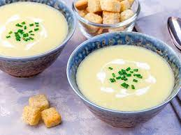

Potage le Magnifique
Description
Created by the most renowned chef in Tamriel, Balagog gro-Nolob. He is better known as The Gourmet. He is a masterful chef and author. He has created many dishes, most notably the Potage le Magnifique. This dish is fit for an Emperor.
Ingredients
- 100g butter
- 2 red onions(chopped)
- 5 cloves garlic(finely chopped)
- 1/4 cup white wine
- 1 large potatoe(peeled and chopped)
- 3 carrots(peeled and chopped)
- 1 cup water
- 2 cups chicken broth
- 2 cups beef broth
- 1/2 cup plain flour
- 1 tbsp mixed dried herbs
- 1 bay leaf
- salt and pepper(to taste)
Steps
- Melt the butter in a large soup pot over medium heat. Add the onions and garlic and cook until soft and fragrant about 3-5 minutes.
- Add the chopped carrots and potatoes to the soup pot. Stir to coat with the butter. Sprinkle the flour into the pan and stir it until there are no clumps remaining.
- Add chicken broth, beef broth, white wine, bay leaf, and water. Cook for 15 minutes until the carrots are soft.
- Remove the bay leaf. Puree the reamaining mixture with an immersion blender or normal blender until it has a smooth but thick consistency.
- Add dried herbs, salt and peper. Enjoy!